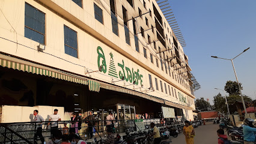

D Mart

- Dmart, also known as Avenue Supermarts Limited, stands out as a prominent retail chain in India renowned for its discount retail model and diverse product offerings at competitive prices. In the context of Electronic City, Bangalore, Dmart likely represents a branch or outlet strategically positioned within the area.
- Following a discount retail approach, Dmart prides itself on providing an extensive array of products spanning various categories including groceries, household essentials, apparel, electronics, and kitchenware. What distinguishes Dmart is its commitment to offering value for money, ensuring customers access high-quality items at prices lower than conventional retail outlets, thereby resonating well with budget-conscious shoppers.
- If there exists a Dmart branch in Electronic City, it would undoubtedly cater to the convenience of residents, office-goers, and visitors alike, likely situated in a prominent and accessible location within the area. Dmart's shopping experience is tailored to be hassle-free, with spacious and well-organized stores facilitating easy navigation and product discovery.
- Moreover, Dmart actively engages with the local community through various initiatives such as promotions, discounts, and community outreach programs, fostering a sense of connection and loyalty among customers.
- Overall, the potential presence of a Dmart outlet in Electronic City would undoubtedly enrich the retail landscape, providing a convenient and cost-effective shopping destination for the everyday needs of residents and visitors.
Click image to view in map